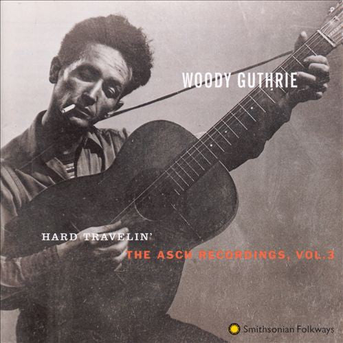
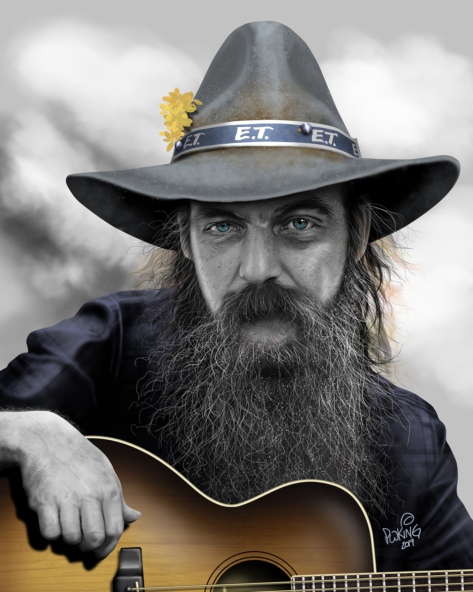
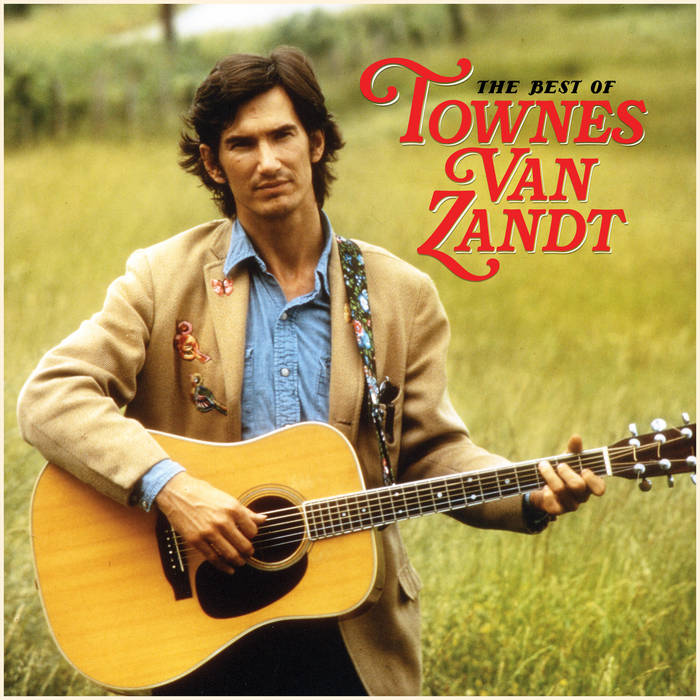

| Artist | Title | Length | Album/Recording | Reference Image |
|---|---|---|---|---|
| Woody Guthrie | Talking Hard Work | 3:32 | The Asch Recordings Vol. 1 (1944) The Asch Recordings Vol. 1 (1944) |  |
| Pete Seger | Where Have All The Flowers Gone | 4.36 | Live in Sweden 1968 | |
| Blaze Foley | Clay Pidgeons | 1:53 | Live From The Front Porch |  |
| Todd Snyder | Tale Of The Devil's Backbone Highway | 10:45 | Near Truths and Hotel Rooms | |
| Dan Reeder | Tulips On The Table | 2:45 | "Dan Reeder"-Self Titled Album | |
| Ramblin Jack Elliot | Railroad Bill | 5:08 | Hard Travelin'℗ 1961 Fantasy Records Inc. | |
| John Prine | Crazy Bone | 4:35 | "1967 The Tree Of Forgiveness | |
| Hank Williams | Howlin'At The Moon | 2:44 | "1951 MGM Double Press W/I Can't Help It | |
| Townes Van Zandt | Wait Around To Die | 4:08 | Heartworn Highways |  |
For How To Narrow Your Selection